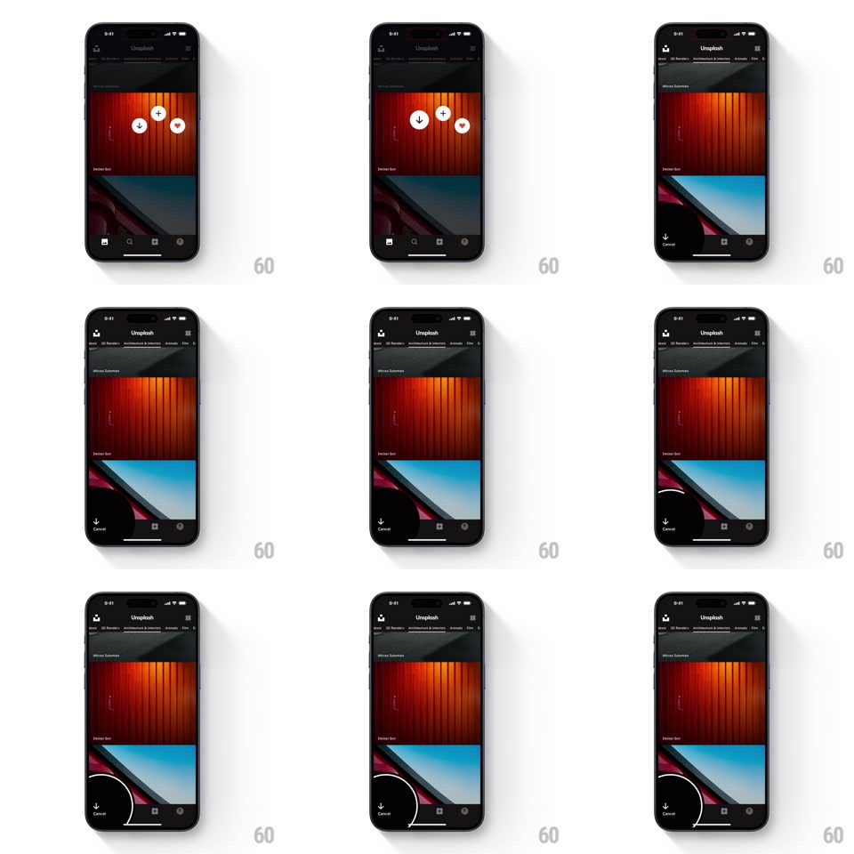

Media
Frame-by-frame

Rebuild this interaction 1:1: Unsplash's long-press download with drag-to-cancel - choosing download from the quick-action trio starts a progress arc in an expanding dark corner zone labeled Cancel; dragging toward the corner grows the zone and cancels on release.

Rebuild this interaction 1:1: Unsplash's long-press download with drag-to-cancel - choosing download from the quick-action trio starts a progress arc in an expanding dark corner zone labeled Cancel; dragging toward the corner grows the zone and cancels on release. ## Integration Integration: stack-agnostic spec - springs given as stiffness/damping, timed motions as duration + curve; map every value to your framework and animation library of choice. ## Scene The dark Unsplash feed with the long-pressed photo dimmed and the quick-action trio (download, collect, heart) at center. On download, a dark rounded zone grows from the bottom-left corner holding a down-arrow with a circular progress arc and a "Cancel" label. ## Motion spec Pattern: corner progress zone with drag-to-cancel. - Release on the download button: the trio springs away and the corner zone expands from the bottom-left (a rounded black blob, spring ~380/20, 350ms) revealing the arrow, arc track, and Cancel label. - The progress arc draws clockwise around the arrow as the download proceeds (stroke trim, tracking real progress). - While downloading, drag the finger toward the corner: the zone scales up (1 -> 1.15) and its radius grows as the finger nears - it reaches for the finger; the Cancel label brightens when the finger enters the zone. - Release inside the zone: the arc wipes out (200ms), the zone contracts away, and a subtle "cancelled" state flashes on the arrow (turns into an X briefly). - Complete without cancelling: the arc closes, the arrow does a down-hop (translateY +4pt and back, 200ms), and the zone collapses. ## Calibration - The zone's growth toward the finger is anticipatory - it should feel magnetic, not binary. - The arc is thin (2pt) with rounded caps, drawn over a faint full-circle track. ## Reduced motion Zone fades in; arc draws without the magnetic growth. ## Don't miss - The zone hugs the corner - it's anchored, not floating. - Cancel is always visible during download - no hidden gesture.